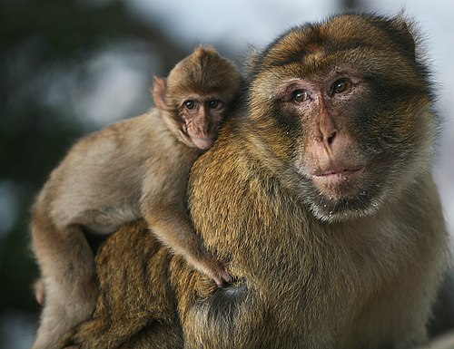

MONKEY
Monkey is a common name that may refer to most mammals of the infraorder Simiiformes, also known as simians.Most species are mainly active during the day (diurnal). Monkeys are generally considered to be intelligent, especially the Old World monkeys.
A group of monkeys may be commonly referred to as a tribe or a troop.
Many monkey species are tree-dwelling (arboreal), although there are species that live primarily on the ground, such as baboons.
WHERE WILL YOU FIND THEM
You will find the Monkeys at pen E25, right next to the monkey trails.